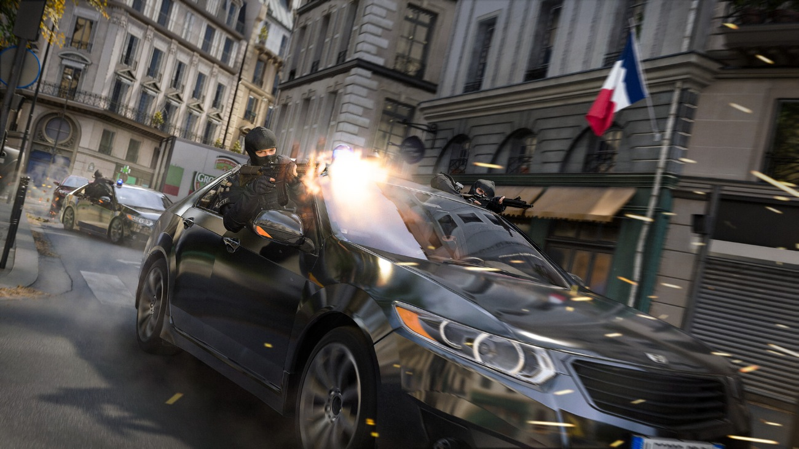
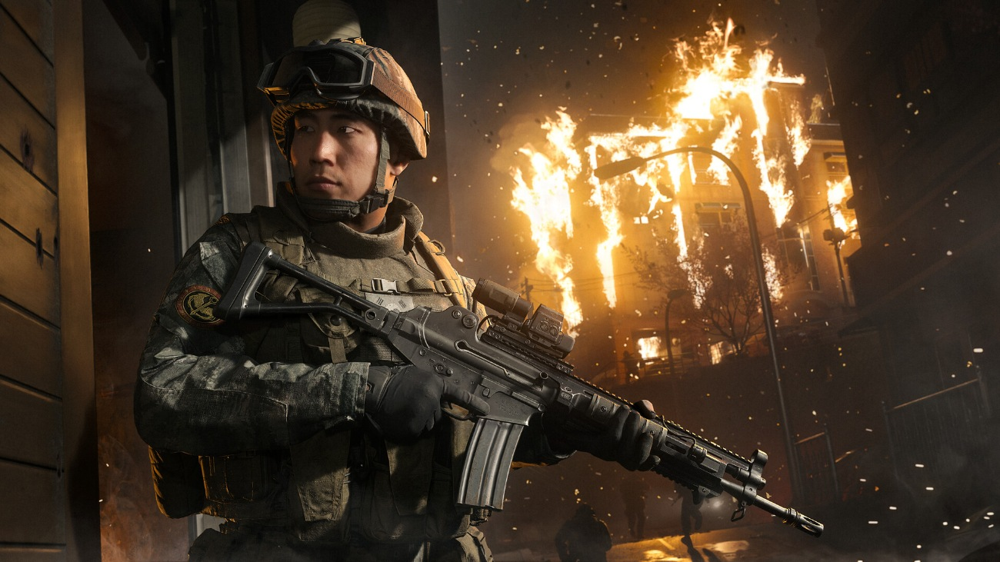
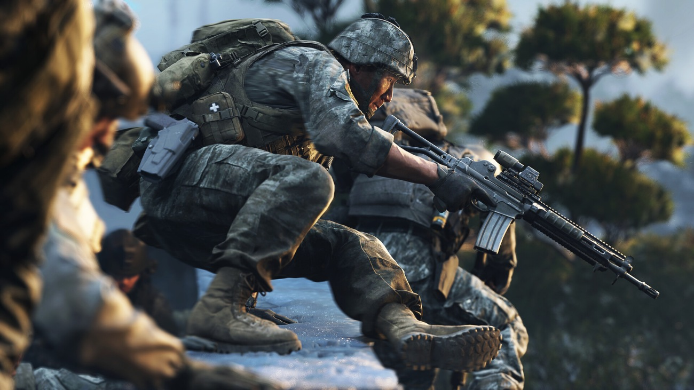

Debo ser de las pocas personas que cuando sale un nuevo Call of Duty piensa acerca de la campaña y si esta estará bien. Para mí Call of Duty es una saga con la que tengo un vínculo emocional muy importante. Todavía recuerdo después de tantos años las épicas y crudas campañas ambientadas en la Segunda Guerra Mundial con el Call of Duty 2 (2005) y Call of Duty 3 (2006) para la XBOX 360. Cómo olvidar cuando me quedé atónito con ese momento en el que Shepherd traicionaba a la Task Force 141 y acababa con la vida de Roach y de Ghost en Modern Warfare 2 (2009) y una sensación de rabia e impotencia recorría todo mi cuerpo. Y por supuesto, las largas tardes de verano jugando con los amigos al modo multijugador y acusándonos entre nosotros de “mira-pantallas”.
Sinceramente, tras el absoluto mierdolo de campaña del Modern Warfare 3 de 2023, mis expectativas sinceramente estaban por los suelos. No obstante, me entró algo de “hype” e ilusión cuando vi el primer tráiler de esta nueva campaña al explorar algo relativamente poco explorado en el mundo de los videojuegos como es la invasión de Corea del Norte a Corea del Sur con una guerra total. También empecé a ver las primeras impresiones de medios y personas que ya lo estaban jugando y todo el mundo hablaba maravillas así que dije “Oh shit, here we go again”. Se trata de una de las mejores campañas de Call of Duty que se han hecho jamás, así de simple y así de cierto.
Este análisis valora la campaña, disponible en acceso anticipado desde el 16 de octubre. La nota corresponde a esa experiencia para un jugador.
Una guerra en dos frentes
La historia nos sitúa en un escenario de creciente tensión internacional, cuando Corea del Norte inicia una invasión a gran escala de Corea del Sur que amenaza con desencadenar un conflicto de dimensiones mundiales. En medio del caos, seguimos los pasos de Park Hyun Jun, un joven soldado surcoreano que, junto a su escuadrón, deberá luchar por sobrevivir en primera línea de combate. Paralelamente, el veterano y legendario capitán John Price, fugitivo al cual se le busca “vivo o muerto” tras lo ocurrido en el MW3, emprende una cruzada personal por todo el mundo (París, Mumbai, Nueva York, etc.) contra una misteriosa amenaza que opera desde las sombras conocida como el “Arquero”. Dos historias aparentemente independientes que terminarán entrelazándose en una conspiración mucho mayor, donde el destino de millones de personas pende de un hilo.

La campaña recupera así la estructura clásica de los Modern Warfare originales, alternando dos perspectivas muy diferentes. Por un lado, acompañamos a un escuadrón de rangers que libra una batalla sin cuartel contra las fuerzas norcoreanas en las calles de Hajin, en Corea del Sur, protagonizando algunos de los enfrentamientos más intensos y espectaculares de la saga. Por otro, las misiones del capitán Price apuestan por un enfoque más táctico y clandestino, con operaciones encubiertas, una mayor dosis de intriga y situaciones jugables más variadas. Personalmente, siempre me ha resultado mucho más atractiva esta segunda vertiente, pero creo que la combinación de ambas funciona de maravilla. No solo permite que la campaña mantenga un ritmo excelente de principio a fin, sino que consigue un equilibrio muy acertado entre la espectacularidad bélica y la tensión de las operaciones especiales, ofreciendo lo mejor de ambos mundos y creo que gustará a quienes disfrutan de cualquiera de las dos facetas de la saga.
La frontera entre lo correcto y lo necesario
Otro de los aspectos que más me han sorprendido de este COD es la crudeza con la que retrata determinados episodios del conflicto. Los de Infinity Ward no se han querido conformar con ofrecer una sucesión de tiroteos espectaculares, sino que también se atreven a mostrar el lado más despiadado y deshumanizador de la guerra. Hay escenas realmente sobrecogedoras que incomodan deliberadamente al jugador y dejan claro que estamos ante un conflicto en el que la violencia trasciende el campo de batalla. Son momentos que contrastan con la acción desenfrenada del resto de la campaña y que consiguen transmitir una sensación de brutalidad pocas veces tan explícita en la franquicia. Y lo más interesante es que esa crudeza no responde únicamente a una búsqueda de impacto visual, sino que contribuye a reforzar el tono sombrío de una historia donde la moralidad y los límites de la violencia están constantemente en entredicho.
Pero donde creo que esta campaña alcanza sus mayores cotas de excelencia es en su trasfondo narrativo. Más allá de las conspiraciones, los giros argumentales y el espectáculo bélico, la historia plantea una cuestión moral que me parece especialmente interesante. ¿Hasta dónde estamos dispuestos a llegar para proteger aquello en lo que creemos? El juego recupera una de las ideas más representativas de la saga, aquella de que a veces hay que mancharse las manos para que el mundo pueda seguir limpio, y la lleva al centro de su discurso. A través de sus personajes, y especialmente de la figura del capitán Price, nos enfrenta a esa incómoda frontera entre lo correcto y lo necesario, entre cumplir las reglas o vulnerarlas en nombre de un bien mayor. Lo que más me gusta es que, al menos en su planteamiento, no estamos ante una simple historia de buenos contra malos, sino ante una reflexión sobre el precio moral de nuestras decisiones y sobre quién tiene realmente la autoridad para decidir qué sacrificios están justificados. Es precisamente esa parte más ético-existencial la que, para mí, eleva su narrativa por encima de la típica historia de acción militar.

Curtido significa que te van a curtir
La historia como viene siendo costumbre tiene varias opciones de dificultad, yo he elegido “Curtido”, que es algo así el equivalente a difícil. No sé si es que me estoy volviendo viejo o qué, pero este modo de dificultad no es como en otros juegos donde el difícil es que te pegan un poco más. El Curtido de esta campaña quiere decir que te van a CURTIR en el campo de batalla, vas a morir como un cerdo de maneras que ni te imaginas. Esta campaña tiene una mecánica que no me hace especial gracia heredada del Warzone que es el blindaje. Esta mecánica no es algo accesorio o cosmético. Si no te pones placas, te van a pegar un par de tiros y vas a morir, así que no hagas como yo y enchúfate placas si ves que no te quedan. Y luego, olvídate de ir como un loco hacia delante en medio de un tiroteo porque te van a matar, vas a tener que usar todo tipo de cobertura y granadas cegadoras para abrirte paso poco a poco, ganando posiciones y avanzando como si fueras un marine en la vida real.

Un cierre a la altura de su legado
Con este Modern Warfare 4, Infinity Ward pone el broche final a una etapa que comenzó en 2019 con el reinicio de una de las subsagas más emblemáticas de la franquicia. Siete años después, esta cuarta entrega tenía ante sí la difícil responsabilidad de cerrar los arcos argumentales de personajes tan icónicos como Price, Ghost o Gaz y, al mismo tiempo, devolver el prestigio a unas campañas que habían perdido parte de su identidad en los últimos años. Y, personalmente, creo que no solo lo consigue, sino que lo hace ofreciendo una de las experiencias más completas, intensas y memorables que he jugado en mi vida. Una campaña que recupera lo mejor de los Modern Warfare clásicos, que sabe combinar el espectáculo bélico con una narrativa de sorprendente calado moral y que, por encima de todo, entiende qué hizo tan especial a esta saga. No se me ocurre una mejor manera de darle carpetazo final y remontar una historia cuya trama se había ido diluyendo con el paso del tiempo. Se trata de un cierre muy satisfactorio, a la altura de una saga que tanto significa y significó para tantos de nosotros.
Lo mejor
- El equilibrio entre guerra a gran escala y operaciones clandestinas mantiene un ritmo excelente.
- La crudeza y los dilemas morales dan peso a la historia de Price.
- Un cierre muy satisfactorio para esta etapa de Modern Warfare.
Lo peor
- El blindaje heredado de Warzone obliga a reponer placas constantemente.
- La dificultad Curtido puede castigar con muertes muy rápidas.
Desglose de puntuación
Veredicto
Una campaña intensa y memorable que recupera el pulso de los Modern Warfare clásicos. El espectáculo bélico, las operaciones de Price y los dilemas morales cierran esta etapa con una fuerza que la saga necesitaba.